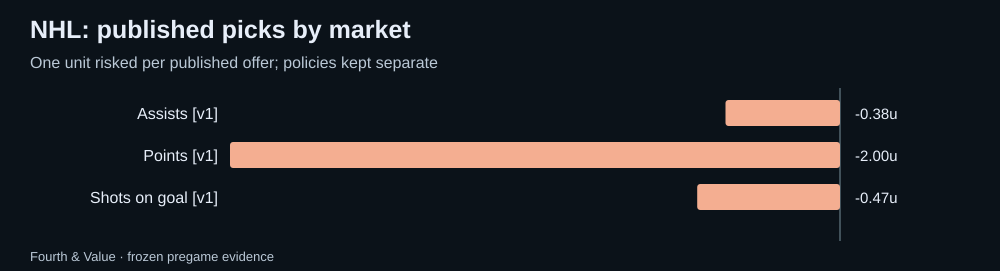

Fourth & Value · Weekly review
NHL weekly recap: 2026-09-29 to 2026-10-05
NHL saved picks and forecasts graded against official results, with market comparisons, unresolved outcomes and the next watchlist.
What this week can tell us
The full-board sample has 42 games with saved pregame quotes; 42 have official results available. Separately, 21 published morning picks cover 6 games; 6 of those games have official results. These are archived samples, not a claim to cover every league game.
The strongest relative probability score was moneyline (42 observations); the weakest was spread / run line (42 observations). These rankings describe this sample; even the strongest market may trail sportsbook probabilities.
Published morning picks
Only the final morning edition for each Eastern date is counted. One unit risked at each published price; pushes return the stake. Unresolved picks are excluded from ROI. Policy versions stay separate.
| Policy | Market | W–L–push | Net units | ROI | Unresolved |
|---|---|---|---|---|---|
| morning-edition-1 | Assists | 1–1–0 | -0.38 | -18.8% | 0 |
| morning-edition-1 | Points | 2–4–0 | -2.00 | -33.3% | 0 |
| morning-edition-1 | Shots on goal | 7–6–0 | -0.47 | -3.6% | 0 |

Full-board market results
One most-offered paired line per game, player and market from the final saved pregame snapshot. O/U columns count over / under / push; team markets count home win or cover / away / push. These are market outcomes, not a strategy return.
| Market | Over or home / other / push | Unresolved | Brier model / market (n) | Mean error model / line (n) |
|---|---|---|---|---|
| Moneyline | 23 / 19 / 0 | 0 | 0.2388 / 0.2394 (42) | — |
| Assists | 189 / 375 / 0 | 12 | 0.2171 / 0.2101 (558) | 0.54 / 0.60 (558) |
| Goals | 75 / 203 / 0 | 3 | 0.1950 / 0.1919 (273) | 0.46 / 0.56 (273) |
| Points | 254 / 311 / 0 | 12 | 0.2479 / 0.2349 (559) | 0.69 / 0.69 (559) |
| Shots on goal | 259 / 292 / 0 | 6 | 0.2583 / 0.2481 (544) | 1.23 / 1.22 (544) |
| Spread / run line | 21 / 21 / 0 | 0 | 0.2505 / 0.2375 (42) | — |
| Game total | 19 / 23 / 0 | 0 | 0.2524 / 0.2488 (42) | — |
Forecast quality
Across 2060 matched non-push observations in 42 games, model Brier was 0.2352, versus market 0.2264. Lower is better. The game-block 95% interval for model minus market Brier is +0.0033 to +0.0147.
Probabilities are compared on the same non-push outcomes after conditioning the model on non-push. Missing forecasts stay missing. Error comparisons use matched observations only. Small samples and correlated markets limit what a strong week can prove.
Next week's watchlist
- No fresh archived future total disagreements are available. Recheck the current board after its next refresh.
These are dated model-market disagreements to research, not validated edges. Check lineups, availability and current prices.
Evidence and limitations
participation unconfirmed: 33
Official nonparticipants, unsupported contracts and missing statistics are unresolved, never automatic zeroes or winning unders. Standard full-game settlement is assumed; sportsbook exceptions require separate review. MLB pitcher props require an official starting appearance. Team totals are not part of the supported archive. Results may be revised when official feeds are corrected.
Download every graded row and source snapshot · Current NHL board · How updates work · All recaps